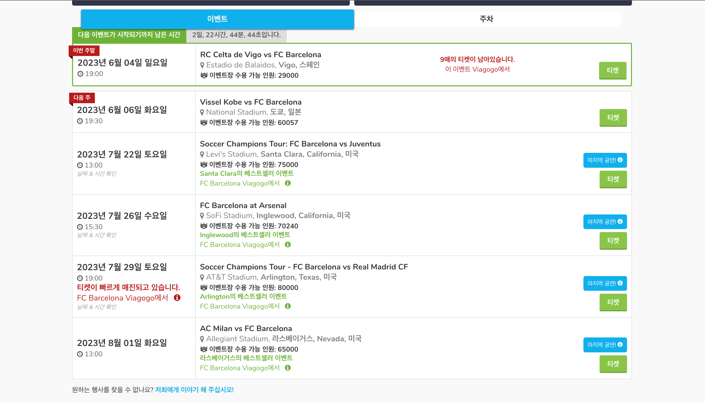

홈 경기 티켓 구매 방법
공식 홈페이지 (추천)

이용 방법
1. 홈페이지 접속 후 보고싶은 경기를 선택
(현재는 시즌이 종료되어 예매 불가)
2. 경기를 선택한 후 구역을 먼저 선택
3. 구역을 선택했다면 초록색으로 표시된 좌석을 선택
(혼자 앉을 지, 일행이 있는지 선택해야 한다.)
4. 좌석까지 선택을 했다면 결제 정보를 입력
(티켓은 메일로 보내준다.)
5. 예매 완료!
특징 & TIP
공식 홈페이지라서 안전하고 믿을 수 있다.
좌석마다 360 경기장 뷰를 제공한다.
날짜와 함께 KO:TBA 라고 적힌 일정은 주의하기!
(경기 날짜와 시간이 모두 미정이라는 뜻이다.)
티켓 매진 시에는 이메일 알림 해놓는 것 추천
경기 2~3일 전에 표가 많이 풀린다.
경기장 투어도 예매가 가능하다.
viagogo
이용 방법
1. 홈페이지 접속 후 보고싶은 경기를 검색
2. 경기를 선택한 후 티켓 수량을 선택
3. 수량을 선택했다면 원하는 티켓을 선택
4. 10분 내에 세부정보를 입력한다.
5. 예매 완료!
특징 & TIP
홈 경기뿐만 아니라 원정 경기 티켓도 구할 수 있다.
다양한 구역의 좌석을 예매할 수 있다.
공식 홈페이지보다는 비싼 금액에 판매한다.
차선책으로 예매하는 것을 추천!
사기표도 많이 존재해서 조심해야 한다